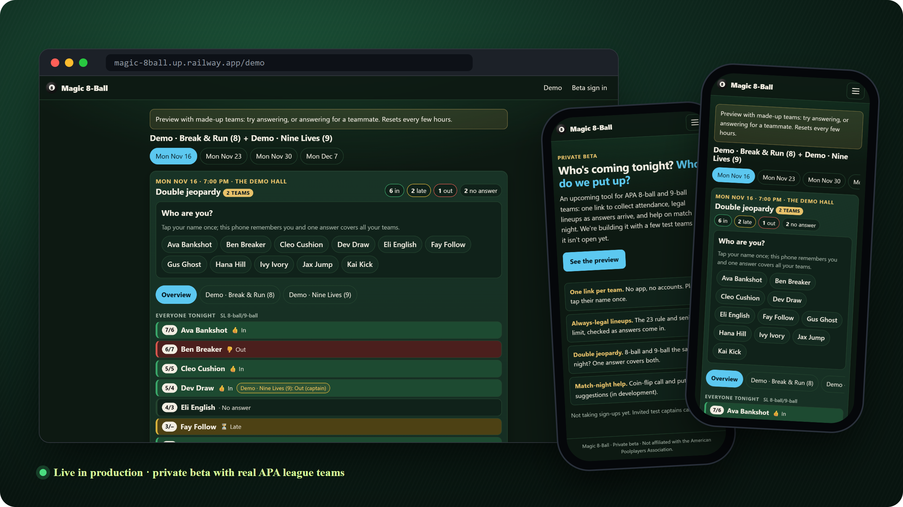

Live · private beta
🎱 Magic 8-Ball
Attendance and match-night help for APA pool league teams. One link per team; players tap their name once and the captain sees a legal lineup form as answers arrive. Rosters, skill levels, and schedules sync from the APA every 15 minutes.
- One Go binary runs the web app, background sync, and demo on Postgres, deployed to separate dev and prod environments
- Security-first: APA sign-in without storing passwords, hashed sessions, strict CSP, same-origin writes, rate limits
- CI gates every deploy: staticcheck, race tests on Postgres, coverage floor, govulncheck, headless-Chrome smoke test
- Evolved over 4 years from a Python Discord bot to a ~29 MB distroless Go service, parity-tested and documented in 21 ADRs
GoPostgreSQLhtmxGraphQLDockerRailwayGitHub Actions